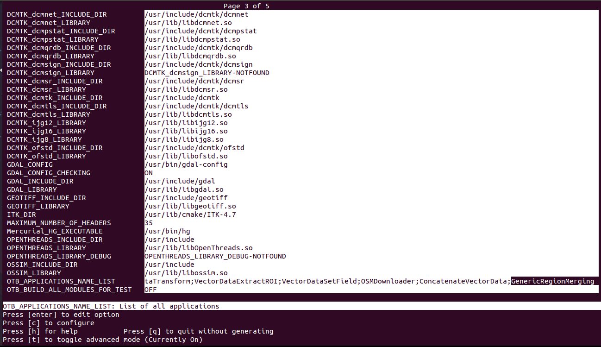
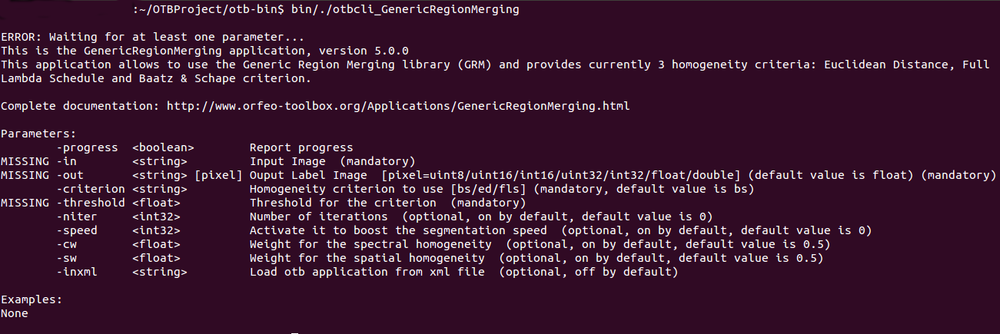
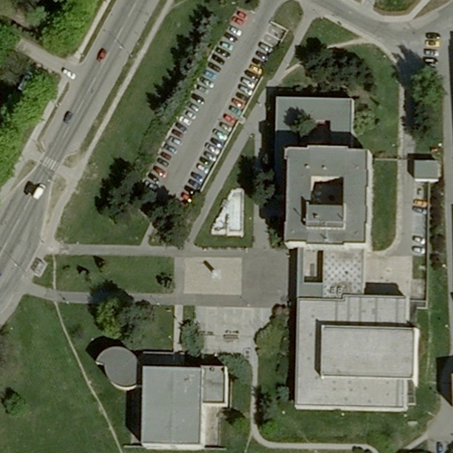
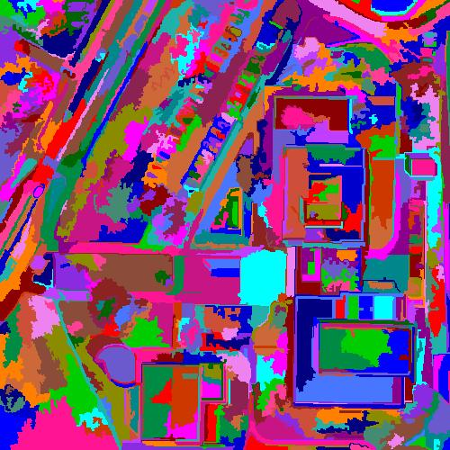

GenericRegionMerging application: Getting Started
Install the Remote Module
In the future release of OTB (5.1), it will not be necessary to do this procedure since
you will just have to activate it when executing ccmake.
The first thing you need is to retrieve the GRM Remote Module available here:
http://tully.ups-tlse.fr/lassallep/grm/tree/master
Once this module downloaded, name it GRM and copy it to the the remote module folder in the source directory of OTB:
/OTB_SOURCE_DIR/Modules/Remote/GRM/
Then run ccmake to create the Makefile for OTB. During the configuration, you should see GenericRegionMerging in the
application name list of OTB:

Then just generate and compile OTB with make.
To test the installation run the GenericRegionMerging application without arguments:
/OTB_BIN/bin/./otbcli_GenericRegionMerging
If everything is ok you see the following message in your terminal:

Great you have installed with success the GRM application. The next section will introduce how to
run a segmentation procedure.
Run a region-merging segmentation
Mandatory parameters
- "-in": this parameter corresponds to the path of the input image to be segmented.
- "-out": this parameter corresponds to the path of the output label image.
- "-threshold": this parameter controls is the stopping criterion of the region-merging procedure
and controls the size of the output segments.
Running by default the following command:
./otbcli_GenericRegionMerging -in img/test.tif -out img/labelOutput.tif -threshold 40
will launch a region-merging procedure using the Baatz and Schape criterion described
here. The spectral
weight and spatial weight are by default set to 0.5.
Optional parameters
- "-criterion": this parameter allows to select the homogeneity criterion to use:
- "bs": Baatz and Schape criterion.
- "ed": Euclidean distance criterion (only a threshold value is needed for this criterion).
- "fls": Full Lambda schedule criterion (only a threshold value is needed for this criterion).
- "-niter": parameter to fix a maximum number of iterations when speed is not activated.
- "-speed": this parameter allows to speed the segmentation process by allowing a segment to merge
several times at each iteration.
- "cw": specific parameter to set the relative importance of the spectral information for the Baatz and Schape criterion.
- "sw": specific parameter to set the relative importance of the spatial information for the Baatz and Schape criterion.
Optional parameters
The resulting image is a label image where each pixel belonging to the same segment is identified with a same
unique label. You can see below an example of label image obtained with a region-merging segmentation
using the Baatz and Schape criterion. A color mapping has been applied on the label image to visualize
the segments.

